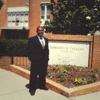

About Me
Born to humble beginnings, I hav come a long way. After earning his Bachelor’s of Science in Physics, I went to work for a small tech company where I learned of my knack for learning many tools at once. After a few years I realized I wanted to make the tools not just learn to use them. After a few detours, I now find myself at the latest chapter of this journey and am still learning all I can.
Ever the free thinker, I have always enjoyed finding creative solutions to new problems. My time working with clients and training others in solutions development has taught me a unique set of skills that put me in a position to disseminate information to end users effectively while also being able to lend my talents to development and support staff and coordinate the interactions between the end user and the work being done behind the scenes. Now that I have completed my Fullstack Web Development Coding Certification from GaTech, I aim to bring this skillset to a new arena and further sharpen my front end and back end skills in MYSQL, HTML, CSS, Javascript, React and Angular just to name a few. I am continuing to hone my craft by sharpening my skill with code reviews, problems solving, web design and discovering newer languages and techniques. I hope to bring my skills and more to an organization and prove myself a great asset while building on my current abilities.